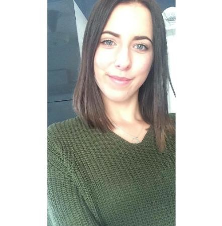

Valentine Lesourd-Aubert
21 ans
08/08/1998
30, rue de Doumerc 33000 Bordeaux
Informations personnelles
|
Récemment arrivée à Bordeaux pour débuter un master en bio-informatiques, j'ai d'abord acquis de solides connaissances en biologie à Clermont-Ferrand. |
Parcours académique
2008-2010 Licence de Biologie parcours BOPE à Clermont-Ferrand
2010-2012 Master bio-informatique de Bordeaux